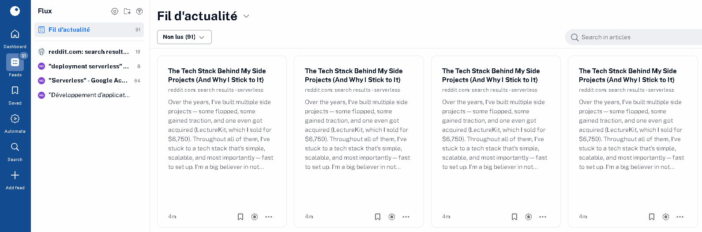

La veille technologique est un processus qui permet de collecter et surveiller des informations et leur evolutions.
Son but principal est de rester informe de toutes les nouveautes et innovations qui pourraient apparaitre dans un secteur
Inoreader est un lecteur de contenu
et de flux RSS en ligne pour les navigateurs Web
et sous forme d'application pour les appareils mobiles
Développement et déploiement d'applications sans serveur
L’approche sans serveur (ou « serverless »)
est un modèle de développement
et d’exécution d’applications
qui permet aux développeurs
de générer et d’exécuter du code
sans mettre en place
ni gérer de serveurs ou d’infrastructure backend.
